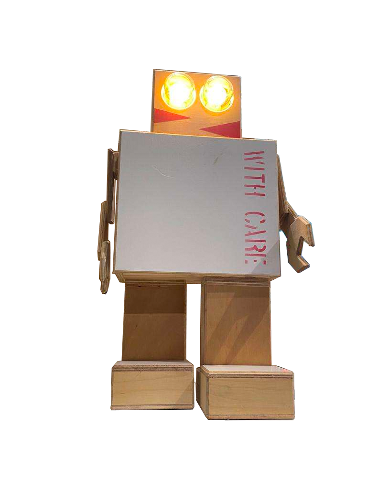

Wat zijn de Rijkswachters?
De Rijkswachters zijn kleine poppetjes (bots) die zijn gemaakt van de transport kisten waarin jaren lang kunstwerken van het rijks museuem in bewaard waren
Hoe werkt het proces?
Eerst hebben ze een lading van transport kisten
Deze kisten worden dan getransporteerd naar een kleine workshop waar ze tijdelijk worden opgeslagen
Uiteindelijk worden dus in de workshop door twee mensen uitelkaar gehaald en omgetoverd tot de Rijkswachters!